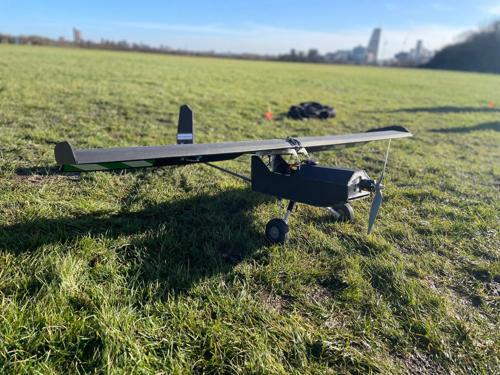
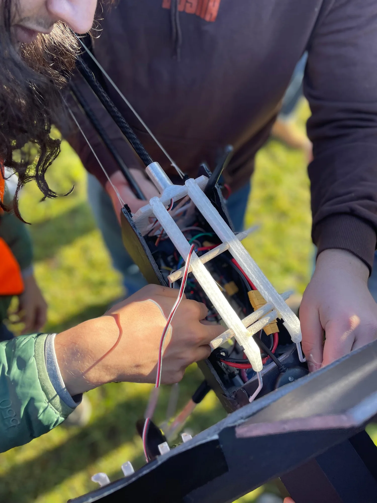
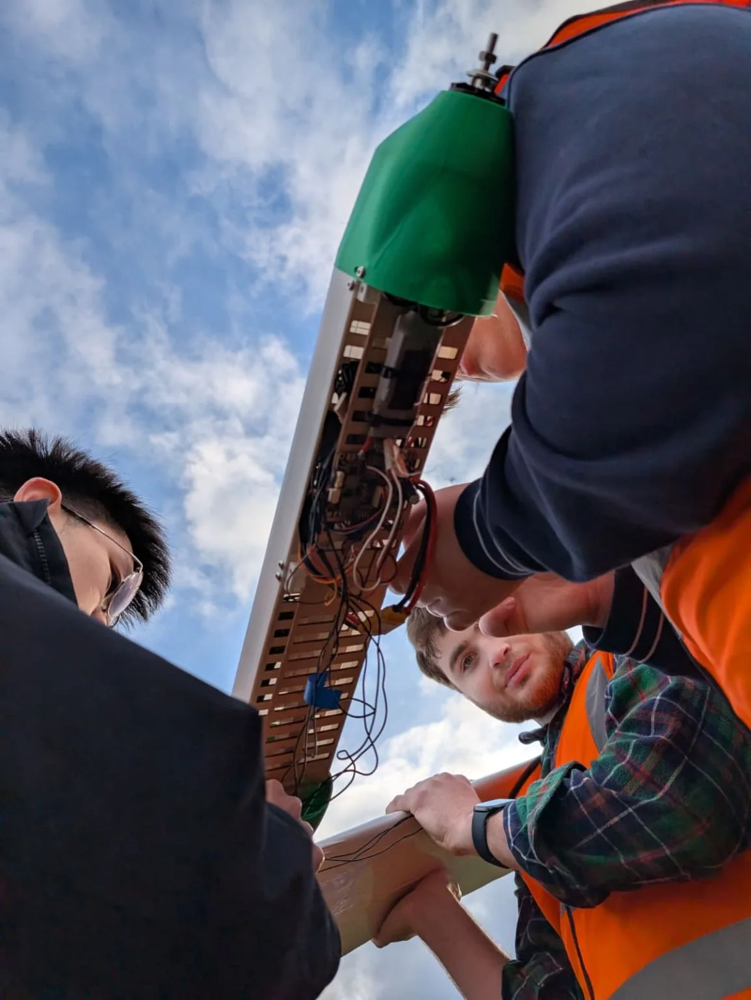

Beyond
82 hours.
Seeking to break the flight endurance world record for sub-50 kilogram UAVs.
The
programme.
A lightweight aircraft. Enough energy to keep flying after sunset.
Our demonstrators let us develop the airframe, power systems and flight controls together. What we learn from each flight shapes the aircraft we are building for the endurance attempt.
Our January 2026 demonstrator took that work into the air at Wormwood Scrubs. The next step is to bring solar generation and energy storage into a platform built for longer flights.
Explore our aircraft ↗

Every watt.
Every gram.
The energy collected during the day has to carry the aircraft through the night.
Wing shape, structural weight and power demand all affect how long we can stay airborne. We develop them together, alongside the solar cells and batteries.
Generate power for flight and store enough energy for the hours without sunlight.
Until
sunrise.
After sunset, the aircraft must fly on the energy it has stored.
Battery capacity is only part of the problem. The aircraft also needs to use as little power as possible, with flight controls that keep it on course.
For a flight lasting several days, that balance has to hold through each night and leave enough daylight to recharge.
Collect, store, conserve. Then repeat the cycle.


Built by us.
Flown by us.
Around 20 students, working across the whole aircraft.
Our work brings together aerodynamics, structures, electronics and flight operations. We take the aircraft from design reviews and workshop assembly to the flying field.
Flight days put those decisions to the test. The data comes back to the team and helps us work out what to change next.
Meet the team ↗100hours.
Four days. Four nights. Still flying.
That is the flight we are building towards. Every demonstrator, ground test and hour in the air is there to make the next aircraft lighter, more efficient and more dependable.
The current reference is AtlantikSolar's 81.5 hour flight in 2015 in the under 50 kg class. Read the ETH report ↗
2026 programme
Our next
aircraft.
The next airframe brings together what we have learned from the demonstrator, with system integration and ground testing ahead of flight.
Team
Meet the students behind the aircraft and see how we work together.
02Aircraft
The demonstrator, its systems and the decisions behind the design.
03Updates
Flight reports, workshop progress and the next steps for the programme.
04Contact
Talk to us about joining the team, supporting the project or working together.